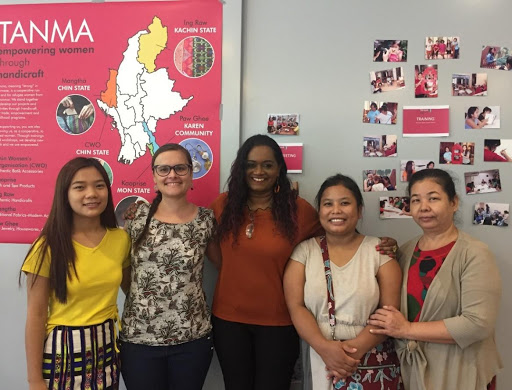
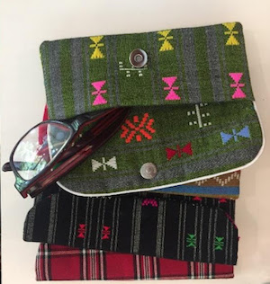

I am Annie and a member of the ABWM Charity Coordinator Team.
I had heard the name TANMA being mentioned many times in different circles, and
they were at our ABWM Christmas Bazaar selling their handmade wares as well. I
didn’t know much else about this Non-Governmental Organization (NGO) apart from
the fact that they helped the Burmese refugee community. So, when Julie, our
ABWM Committee Chair, forwarded to us TANMA’s Open House International Women’s
Day flyer, I saw a chance to learn more about this quite famous NGO.
The Open House was held in a bright function room. Audrey Perriolat, the current
volunteer coordinator of the TANMA Federation, greeted me upon my arrival and told
me the story of TANMA. I also took the opportunity to talk to the Burmese women
and vendors on site, most of which work with the TANMA women’s sewing expertise
in order to manufacture their own merchandise.
Some Figures
"As of end January 2019, there are some 164,620 refugees and asylum-seekers
registered with UNHCR in Malaysia. Some 142,370 are from Myanmar, comprising
some 84,030 Rohingyas, 25,700 Chins, 9,770 Myanmar Muslims, 4,000 Rakhines &
Arakanese, and other ethnicities from Myanmar."

From left to right: Muang I, Audrey, Glorene (executive director of Tenaganita),
Cuai Cuai and My Ti Mon at the TANMA Open House
Refugees settling in Malaysia are often not recognized by the country
and therefore cannot benefit from the social services such as health care,
joining the local workforce and education. Out of this need to sustain themselves
and their family and to provide education to their children, different organisations
were created to support the different communities and their specific needs.
Sometimes, different organisations would collaborate with each other to make
a central organisation in order to share resources and knowledge that could
bring about more benefit to their combined communities. One such organisation
was TANMA.
TANMA Federation: Refugee Women Fair Trade
TANMA, meaning “strong” in Burmese, operates under Tenaganita (Women’s Force),
the local NGO powerhouse that’s been active since 1991 for the protection and
promotion of the rights of women, migrants and refugees. Founded in September
2010 by the women of Mangtha (“sweet dreams” in Burmese), Kaoprise and Chin
Women Organisation (CWO), which were three ethnic Burmese refugee women’s
group, the TANMA Federation was to be a cooperative for and run by refugee
women. In addition to sharing resources and expertise, the cooperative also
provided greater support system in networking and marketing, thus creating
financial and livelihood opportunities for these women.
With TANMA, these women do not only learn about
their rights as women and as workers but also to own and protect these
rights within their work environment and also within their family and
community.
Education being a key factor for self-empowerment, sustainable
income-generating programs were developed in order to help the betterment
of these women:
Consistent training on livelihood skills
Continuous English language lessons
Business & marketing skills development
Financial literacy training
Livelihoods project management
Leadership development
Today TANMA regroups five different Burmese organisations
that represents refugees from different states and each organisation produces
their own products (cf. map below): Mangtha, CWO, Kaoprise, Paw Ghee and Ing Raw.
This is no small feat since some of these ethnic groups have a historically tense
relationship with each other. The collaborative model of TANMA provided these
different groups to learn from each other and to increase the solidarity between
them.
All revenues from the sale of their merchandise goes back into their community to
keep their centers and services operating. In addition to producing their own products,
TANMA also promote the collaboration between entrepreneurs and the women artisans in
order to produce merchandise that are locally and ethically made.
Herstories
Muang I
At 13 years old, Muang I came to Kuala Lumpur in 2010 with her family
from the Chin State. Later on, she enrolled in a school for refugees where
she learned English and other subjects. Young but with a strong desire to
help her community, two years ago she took on the daunting task of Operation
Manager at the Mangtha center. She is quite busy, but happy, in helping
the center run their six months sewing program and the nursery to help the
working mothers. They are currently seven artisans at their Pudu workshop,
producing various handmade accessories using their traditional Chin fabrics
and designs ranging from eyeglasses holders, aprons, wine wraps to wallets
and trendy handbags. Most cross-stitching projects are done by their church
members. Some pieces take 2 days to make while more complicated ones can
take up to 7 days to complete.
My Ti Mon
My Ti comes from the Mon group where she developed an expertise at making
soaps, coconut oil and candles. She lives in KL with her two daughters who
now work at a beauty center. Although her English is limited at the moment,
she is currently taking English classes with TANMA.
Cuai Cuai
Cuai Cuai is from the Chin group. She currently manages the CWO school
where she teaches and also lives with her husband, an electrician, and their
son. The school has about 50 children between 3 and 16 years of age.
Muang I, Cuai Cuai and My Ti Mon with their various handmade merchandise

How can you help?
TANMA is always on the lookout for donations: monetary,
clothes, school supplies, staple (rice, cooking oil, etc.), hygiene products,
etc. They also have a need for volunteer teachers in English, Science and Math
at the Primary level as well as instructors for professional vocations: sewing,
manicure, massage therapy, to name a few. You can also contribute by buying
their beautiful handcrafted products… and of course, spread the word around!
Collaborations
After talking with the vendors onsite, it was clear
that they really appreciate and enjoy collaborating with these Burmese women.
In addition to the monetary income that these women gain with each new
project, they also acquire valuable expertise in working with different
vendors, quality fabrics and products; an expertise that they can, in
turn, teach to others in their community.
INKAA Clothing
Wear the change
This is a young t-shirt company founded by an
entrepreneur from Belgium (Ludovic) and from Malaysia (Muizz).
Their trademark is the batik pocket on their solid color tee-shirt.
The handmade batik is sourced from artisans in Terengganu and
brought back to the TANMA Mangtha ladies to cut and sew onto
the tee-shirts. Another interesting part is that every t-shirt
tag bears its tailor’s hand signature and we can go to their
website to read about the tailor’s personal story.
What started as a hobby, slowly turned into a little business
when Pauline was introduced to TANMA’s Mangtha ladies in 2018.
The trust and complicity that was developed from their collaboration
resulted in a beautiful line of handcrafted baby accessories and
kids clothing. As Pauline was very hands-on and meticulous about
the sewing, she values the fact that the Mangtha ladies were very
receptive and eager about learning the finer sewing details, a
knowledge that they could use for other sewing projects and pass
on to their peers.
Born from her love of yoga and a wish to contribute to the community,
Marjolijn created Surya Bags in 2016. Not too hands on with sewing,
she was happy to be able to tap into the Malaysia Karen Organisation
(MKO) Paw Ghee ladies’ sewing knowledge in order to produce the bags
at their Kuala Lumpur workshop. Originally just producing yoga bags,
the lineup has expanded to handbags and sport bags as well. Currently
there is only one MKO lady from the original group that remains sewing
the bags but she has trained her husband to sew as well. She is now
also training two other peers of her community.
Coup de Pouce, meaning “giving a helping hand” in French, was founded
in 2012 by French volunteers. This NGO’s main goal is to help local
associations in their needs, TANMA being one of them. In addition to
regularly organise funding events and donation collections, they also
have a showroom, hosted at one of the volunteers’ own home, where you
can go to and buy merchandise: jewelry, clothing, board games, books,
etc. Should you be interested, do email them to arrange a visit.
For the occasion, Coup de Pouce was also selling locally and organically
grown herbal tea to benefit the Positive Living Community, another NGO
helping marginalised individuals.
There are a few organisations offering handwoven bags and baskets from
the Penan women but this one prides themselves in their transparency at
the production and financial level. This NGO was founded in 2014 by
Julianna Lee, a Malaysian from Kuching, after she witnessed the plight
of the ethnic women in the Miri region of Sarawak. Today, Penan Bags –
Europe employs about 30 Penan women and 100% of the proceeds from the
sales goes back to the projects of helping these women, their children’s
education and their community. If you want to help with organising sales,
you can contact Alexandra who is the volunteer coordinator at the Kuala
Lumpur end.